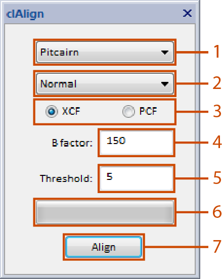

A Gatan Digital Micrograph plugin to align stack images using OpenCL
Download v1.0 SourceclAlign is a C++ plugin for Gatan Digital Micrograph to align and sum stack images, using OpenCL where possible.
Multiple alignment methods are implemented. A normal correlation and a method of solving an overdetermined equation as detailed by X. Li et al.. In addition, both cross-correlation and phase-correlation can be used. Sub-pixel image shifts are applied using bilinear interpolation and blank frames are removed.
Requires x64 Digital Micrograph, OpenCL and clFFT
To install download or compile clAlign.dll and copy to the Digital Micrograph plugins directory along with the clFFT dll.

Small portions of the code provided by X. Li et al. have been reused here (made available under the terms of the GNU Public License version 3 (GPLv3))
A lot of the linear algebra part has been taken or reworked from Zhang Ming's work on SP++ (GNU Public License version 2 (GPLv2))